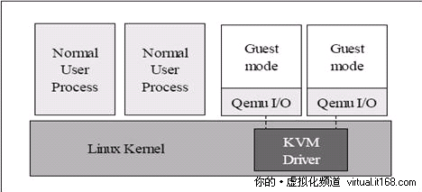

RHEL6.2上使用 libvirt创建和管理KVM虚拟机
本文出自 “秋天的童话” 博客，请务必保留此出处: http://wushank.blog.51cto.com/3489095/1301120
在2010年4月发布的RHEL 6.0 Beta版中 ，去掉了Xen，这也许是第一个不包含Xen Hypervisor的知名Linux发行版，之前有报道过Red Hat有可能会在RHEL 6.0中用KVM完全代替Xen，现在看来以前的消息一点不假。KVM 是指基于 Linux 内核的虚拟机(Kernel-based Virtual Machine)。增加 KVM 到 Linux 内核是 Linux 发展的一个重要里程碑，这也是第一个整合到 Linux 主线内核的虚拟化技术。在 KVM 模型中，每一个虚拟机都是一个由 Linux 调度程序管理的标准进程，你可以在用户空间启动客户机操作系统。一个普通的Linux 进程有两种运行模式：内核和用户。 KVM 增加了第三种模式：客户模式(有自己的内核和用户模式)。
KVM 所使用的方法是通过简单地加载内核模块而将 Linux 内核转换为一个系统管理程序。这个内核模块导出了一个名为 /dev/kvm 的设备，它可以启用内核的客户模式(除了传统的内核模式和用户模式)。有了 /dev/kvm 设备，VM 使自己的地址空间独立于内核或运行着的任何其他 VM 的地址空间。设备树(/dev)中的设备对于所有用户空间进程来说都是通用的。但是每个打开 /dev/kvm 的进程看到的是不同的映射(为了支持 VM 间的隔离)。安装 KVM 之后，您可以在用户空间启动客户操作系统。每个客户操作系统都是主机操作系统(或系统管理程序)的一个单个进程。 图 1 提供了一个使用 KVM 进行虚拟化的视图。

KVM虚拟机管理工具
准确来说，KVM 仅仅是 Linux 内核的一个模块。管理和创建完整的 KVM 虚拟机，需要更多的辅助工具。
QEMU-KVM：在 Linux 系统中，首先我们可以用 modprobe 命令加载 KVM 模块，如果用 RPM 安装KVM 软件包，系统会在启动时自动加载模块。加载了模块后，才能进一步通过其他工具创建虚拟机。但仅有 KVM 模块是远远不够的，因为用户无法直接控制内核模块去做事情，还必须有一个用户空间的工具。关于用户空间的工具，KVM 的开发者选择了已经成型的开源虚拟化软件 QEMU。
QEMU介绍
是一个强大的虚拟化软件，它可以虚拟不同的 CPU 构架。比如说在 x86 的 CPU 上虚拟一个Power 的 CPU，并利用它编译出可运行在 Power 上的程序。KVM 使用了 QEMU 的基于 x86的部分，并稍加改造，形成可控制 KVM 内核模块的用户空间工具QEMU-KVM。所以 Linux 发行版中分为 内核部分的KVM 内核模块和 QEMU-KVM 工具。这就是 KVM 和 QEMU 的关系。
libvirt、virsh、virt-manager：尽管 QEMU-KVM 工具可以创建和管理 KVM 虚拟机，RedHat 为KVM 开发了更多的辅助工具，比如 libvirt、libguestfs等。原因是 QEMU 工具效率不高，不易于使用。
libvirt介绍
libvirt是一套提供了多种语言接口的 API，为各种虚拟化工具提供一套方便、可靠的编程接口，不仅支持 KVM，而且支持 Xen 等其他虚拟机。使用 libvirt，你只需要通过 libvirt 提供的函数连接到 KVM 或 Xen 宿主机，便可以用同样的命令控制不同的虚拟机了。
Libvirt 不仅提供了 API，还自带一套基于文本的管理虚拟机的命令 virsh，你可以通过使用 virsh 命令来使用 libvirt 的全部功能。但最终用户更渴望的是图形用户界面，这就是virt-manager。他是一套用 python 编写的虚拟机管理图形界面，用户可以通过它直观地操作不同的虚拟机。Virt-manager 就是利用 libvirt 的 API 实现的。
Libvirt是一个软件集合，便于使用者管理虚拟机和其他虚拟化功能，比如存储和网络接口管理等等。Libvirt概括起来包括一个API库、一个 daemon（libvirtd）和一个命令行工具（virsh）。
Libvirt的主要目标是：提供一种单一的方式管理多种不同的虚拟化提供方式和 hypervisor。
Libvirt的主要功能如下：
- 虚拟机管理
包括不同的领域生命周期操作，比如：启动、停止、暂停、保存、恢复和迁移。
支持多种设备类型的热插拔操作，包括：磁盘、网卡、内存和CPU。
- 远程机器支持
只要机器上运行了libvirt daemon，包括远程机器，所有的libvirt功能就都可以访问和使用。
支持多种网络远程传输，使用最简单的SSH，不需要额外配置工作。比如：example.com运行了libvirt，而且允许SSH访问，下面的命令行就可以在远程的主机上使用virsh命令行。
virsh --connect qemu+ssh://root@example.com/system
- 存储管理
任何运行了libvirt daemon的主机都可以用来管理不同类型的存储：创建不同格式的文件映像（qcow2、vmdk、raw等）、挂接NFS共享、列出现有的LVM卷组、创建新的LVM卷组和逻辑卷、对未处理过的磁盘设备分区、挂接iSCSI共享，等等等等。因为libvirt可以远程工作，所有这些都可以通过远程主机使用。
- 网络接口管理
任何运行了libvirt daemon的主机都可以用来管理物理和逻辑的网络接口。可以列出现有的接口卡，配置、创建接口，以及桥接、vlan和关联设备等，通过netcf都可以支持。
- 虚拟NAT和基于路由的网络
任何运行了libvirt daemon的主机都可以用来管理和创建虚拟网络。Libvirt虚拟网络使用防火墙规则作为路由器，让虚拟机可以透明访问主机的网络。
安装配置KVM相关软件
-
服务器端
- 操作系统：Red Hat Enterprise Linux Server release 6.2 (Santiago)
- 内核： Linux 2.6.32-220.el6.x86_64 x86_64 x86_64 x86_64
- GNU/LinuxKVM：qemu-kvm-0.12.1.2-2.209.el6.x86_64
系统要求
处理器需求:需要一台可以运行最新linux内核的Intel处理器(含VT虚拟化技术)或AMD处理器(含SVM安全虚拟机技术的AMD处理器, 也叫AMD-V)。可以使用如下命令检查：
egrep "(vmx|svm)" --color /proc/cpuinfo
如果输出的结果包含 vmx，它是 Intel处理器虚拟机技术标志;如果包含 svm，它是 AMD处理器虚拟机技术标志;。如果你甚么都得不到，那应你的系统并没有支持虚拟化的处理 ，不能使用kvm。另外Linux 发行版本必须在64bit环境中才能使用KVM。
安装软件
安装KVM模块、管理工具和libvirt (一个创建虚拟机的工具)，我们使用命令行安装：
yum install qemu-kvm qemu-kvm-tools virt-manager libvirt libvirt-devel libvirt-client virt-manager virt-viewer service libvirtd start
加载kvm模块
运行命令 lsmod | grep kvm 检查 KVM 模块是否成功安装。如果结果类似于以下输出，那么 KVM 模块已成功安装：
lsmod | grep kvm kvm_amd 69416 1 kvm 226208 2 ksm,kvm_amd 或 kvm_intel 50380 4 kvm 305113 1 kvm_intel
测试进入控制台
virsh -c qemu:///system list # 将会显示如下结果: Id Name State ---------------------------------- 2 mykvm running
如果在这里显示的是一个错误的信息，说明有些东西出现了问题。
用virt-manager建虚拟机
virt-manager 是基于 libvirt 的图像化虚拟机管理软件，请注意不同的发行版上 virt-manager 的版本可能不同，图形界面和操作方法也可能不同。本文使用了红帽6企业版的 virt-manager-0.9.0-7。创建KVM虚拟机最简单的方法是通过virt-manager接口。
- 需要对localhost进行连接配置
- 对虚拟网络进行配置，默认为nat方式的“default”，可以新添加网桥方式，也可以使用btctl创建
- 创建或添加存储，可以是逻辑卷，也可以硬盘文件
配置bridge
- 创建桥接器
在/etc/sysconfig/network-scripts目录下，创建一个ifcfg-br0 文件，其类型设为Bridge：
cat /etc/sysconfig/network-scripts/ifcfg-br0DEVICE=br0 TYPE=Bridge BOOTRPOTO=static IPADDR=10.8.0.124 NETMASK=255.255.0.0 NETWORK=10.8.0.0 GATEWAY=10.8.1.254 ONBOOT=yes
- 将物理接口桥接到桥接器
修改eth0的内容（本服务器是用eth0上网的），去掉其IP相关信息，加上“BRIDGE=br0”，将其桥接到br0上；如果是双网卡或是多网卡，照此过程修改：
cat /etc/sysconfig/network-scripts/ifcfg-eth0 DEVICE=eth0 HWADDR=00:1e:c9:f0:b6:a7 NM_CONTROLLED=yes ONBOOT=yes #IPADDR=10.8.0.123 BOOTPROTO=none #NETMASK=255.255.0.0 TYPE=Ethernet #GATEWAY=10.8.1.254 #DNS1=10.8.1.1 IPV6INIT=no USERCTL=no BRIDGE=br0
-
重启物理机网络服务
service network restart
此时，物理机的IP地址由10.8.0.123变成了10.8.0.124。
-
查看当前桥接情况（有一个虚拟机正在运行）
brctl show
-
将虚拟机接口桥接到桥接器
brctl delif virbr0 vnet0 brctl addif br0 vnet0 brctl show
virsh执行管理任务
virsh的学习曲线非常陡峭。但是另一种可选方式virt-manager的缺陷还很明显，virt-manager需要在系统内运行，这会浪费资源并为别有目的的人提供额外的进攻点。virt-manager的另一大缺点是需要通过图形工作站运行远程接入的方式，才能对服务器上的虚拟机进行管理。而virsh则可以通过命令行执行各种各样的管理任务。如先前所说virsh通过主命令和子命令管理每个虚拟机功能。要学习virsh很困难，因为有许多命令。virsh通过主命令和子命令管理每个虚拟机功能。要查看所有命令，输入virsh help。你可能发现大量命令，不过每个命令都有帮助指南，只需要输入virsh help。例如使用virsh help uri，就可以看到所有关于virsh uri命令的帮助。不过一旦你获得一个很强的命令功能，就能获得收益。
使用命令：
virsh virt-viewer virt-install
virt-install --name=mynodetest --ram 1024 --vcpus=2 --disk path=/tmp/test.img,size=7,bus=virtio \ --accelerate --cdrom /var/iso/rhel-server-6.2-x86_64-dvd.iso \ --vnc --vncport=5910 --vnclisten=0.0.0.0 \ --network bridge=br0,model=virtio --noautoconsole
说明：在linux系统安装开始就要注意添加提高性能的一些参数，后面就不需要做一些调整了。
参数说明:
--name 指定虚拟机名称 --ram 分配内存大小 --vcpus 分配CPU核心数，最大与实体机CPU核心数相同 --disk 指定虚拟机镜像，size 指定分配大小单位为G。 --network 网络类型，此处用的是默认，一般用的应该是 bridge 桥接。 --accelerate 加速(查看virt-install --help中无此选项) --cdrom 指定安装镜像iso --vnc 启用VNC远程管理，一般安装系统都要启用。 --vncport 指定VNC 监控端口，默认端口为5900，端口不能重复。 --vnclisten 指定VNC 绑定IP，默认绑定127.0.0.1，这里改为 0.0.0.0。 --noautoconsole Don't automatically try to connect to the guest console
libvirt创建kvm虚拟机
-
制作虚拟机镜像
qemu-img create-f qcow2 test.qcow2 10G
- 下载并复制iso镜像到指定目录，本文将所有镜像及配置文件放到/var/lib/libvirt/images/目录下，注意：有些系统因为SELinux的原因，限定了qemu的访问，所以，可以根据自己需求调整，默认放在/var/lib/libvirt/images/下。
-
创建安装配置文件，demo.xml如下，可以根据自己需求更改。
<domain type='kvm'> <name>test_ubuntu</name><!--虚拟机名称--> <memory>1048576</memory><!--最大内存，单位KB--> <currentMemory>1048576</currentMemory><!--可用内存，单位k--> <vcpu>8</vcpu><!--虚拟cpu个数--> <os> <type arch='x86_64'machine='pc'>hvm</type> <boot dev='cdrom'/><!--光盘启动--> </os> <features> <acpi/> <apic/> <pae/> </features> <clock offset='localtime'/> <on_poweroff>destroy</on_poweroff> <on_reboot>restart</on_reboot> <on_crash>destroy</on_crash> <devices> <emulator>/usr/libexec/qemu-kvm</emulator> <disk type='file'device='disk'> <driver name='qemu'type='qcow2'/> <source file='/var/lib/libvirt/images/test.qcow2'/><!--目的镜像路径--> <target dev='hda'bus='ide'/> </disk> <disk type='file'device='cdrom'> <source file='/var/lib/libvirt/images/ubuntu.iso'/><!--光盘镜像路径--> <target dev='hdb'bus='ide'/> </disk> <interface type='bridge'><!--虚拟机网络连接方式--> <source bridge='kvmbr0'/><!--当前主机网桥的名称--> <mac address="00:16:3e:5d:aa:a8"/><!--为虚拟机分配mac地址，务必唯一，否则dhcp获得同样ip,引起冲突--> </interface> <input type='mouse' bus='ps2'/> <!--vnc方式登录，端口号自动分配，自动加1，可以通过virsh vncdisplay来查询--> <graphics type='vnc' port='-1'autoport='yes'listen='0.0.0.0' keymap='en-us'/> </devices> </domain> -
按xml文件创建虚拟机
virsh define demo.xml # 创建虚拟机 virsh start test_ubuntu # 启动虚拟机 virsh vncdisplay test_ubuntu # 查看虚拟机的vnc端口，然后就可以通过vnc登录来完成虚拟机的安装
kvm虚拟机控制台
vm虚拟机能否像xen虚拟机一样通过virsh console一样采用字符界面进行linux虚拟机控制台呢，答案是肯定的，默认情况下该命令是不起作用的，需要修改相关文件才能实现。
-
修改/etc/grub.conf文件，在kernel行加入
console=ttyS0default=0 timeout=5 splashimage=(hd0,0)/boot/grub/splash.xpm.gz hiddenmenu title Red Hat Enterprise Linux (2.6.32-220.el6.x86_64) root (hd0,0) kernel /boot/vmlinuz-2.6.32-220.el6.x86_64 ro root=UUID=d81d91a9-9df1-4c3a-9636-cc49d649e411 rd_NO_LUKS rd_NO_LVM LANG=en_US.UTF-8 rd_NO_MD quiet SYSFONT=latarcyrheb-sun16 rhgb crashkernel=auto KEYBOARDTYPE=pc KEYTABLE=us rd_NO_DM console=ttyS0 initrd /boot/initramfs-2.6.32-220.el6.x86_64.img
VNC远程管理
这里的通过vnc方式访问虚拟机不是在kvm虚拟机安装配置vnc服务器，通过虚拟主机的IP地址与端口进行访问，kvm虚拟化对vnc的支持相对来说比xen要好很多，在虚拟主机上配置VNC访问虚拟机，也是为了多提供一种方式访问虚拟机而已。本文出自: http://koumm.blog.51cto.com
-
修改/etc/libvirt/qemu.conf
vnc_listen = "0.0.0.0"
- vnclisten 默认绑定127.0.0.1 在配置文件里指定VNC 绑定0.0.0.0，就不用在安装kvm虚拟机时指定vnclisten参数了。
- 在虚拟主机上有很多个虚拟机的时候，需要指定每个虚拟机的端口，否则将会很乱。
- 修改虚拟机配置文件
配置VNC的配置项，port是指定端口号，autoport是自己分配端口号。
virsh edit mynode
<graphics type='vnc' port='5911' autoport='no' listen='0.0.0.0'>
<listen type='address' address='0.0.0.0'/>
</graphics>
-
启动虚拟机并测试VNC
virtsh vncdisplay mynode # 查看vnc端口 netstat -tunpl | grep :59 tcp 0 0 0.0.0.0:5901 0.0.0.0:* LISTEN 2262/Xvnc tcp 0 0 0.0.0.0:5911 0.0.0.0:* LISTEN 14576/qemu-kvm tcp 0 0 0.0.0.0:5912 0.0.0.0:* LISTEN 14468/qemu-kvm